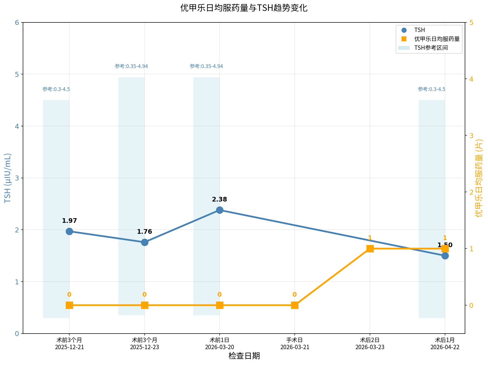
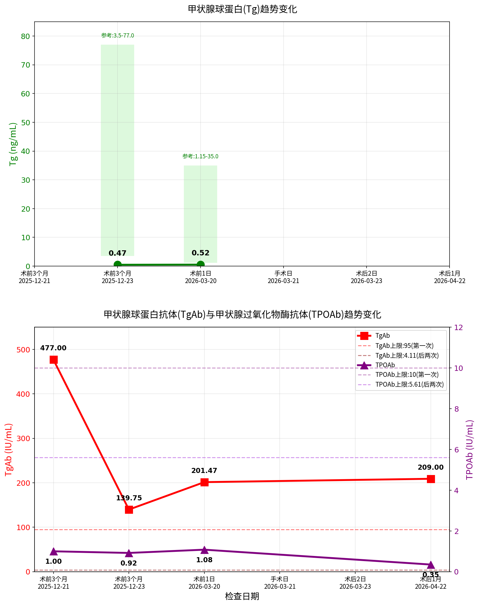
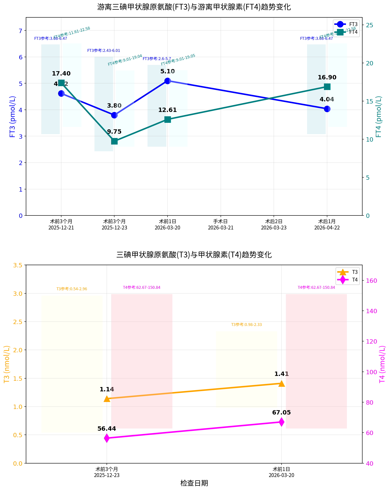

甲状腺术后随访监测
| 时间节点/日期 | 优甲乐 (片/日) |
TSH (μIU/mL) |
Tg (ng/mL) |
TgAb (IU/mL) |
TPOAb (IU/mL) |
|---|---|---|---|---|---|
| 术前3个月 2025-12-21 |
0 |
1.97
0.3-4.5
|
— |
477 ↑
<95
|
1.00
<10
|
| 术前3个月 2025-12-23 |
0 |
1.76
0.35-4.94
|
0.47 ↓
3.5-77
|
139.75 ↑
<4.11
|
0.92
<5.61
|
| 术前1日 2026-03-20 |
0 |
2.38
0.35-4.94
|
0.52 ↓
1.15-35
|
201.47 ↑
<4.11
|
1.08
<5.61
|
| 🔪 手术日 2026-03-21 |
0 | — | — | — | — |
| 术后2日 2026-03-23 |
1 | — | — | — | — |
| 术后1个月 2026-04-22 |
1 |
1.50
0.3-4.5
|
— |
209.00 ↑
<95
|
0.35
<10
|
| 时间节点/日期 | FT3 (pmol/L) |
FT4 (pmol/L) |
T3 (nmol/L) |
T4 (nmol/L) |
|---|---|---|---|---|
| 术前3个月 2025-12-21 |
4.62
3.08-6.47
|
17.40
11.61-22.58
|
— | — |
| 术前3个月 2025-12-23 |
3.80
2.43-6.01
|
9.75
9.01-19.04
|
1.14
0.54-2.96
|
56.44 ↓
62.67-150.84
|
| 术前1日 2026-03-20 |
5.10
2.6-5.7
|
12.61
9.01-19.05
|
1.41
0.98-2.33
|
67.05
62.67-150.84
|
| 术后1个月 2026-04-22 |
4.04
3.08-6.47
|
16.90
11.61-22.58
|
— | — |
| 时间节点/日期 | 25-羟基维生素D2 (ng/mL) |
25-羟基维生素D3 (ng/mL) |
25-羟基维生素D (ng/mL) |
|---|---|---|---|
| 🔪 手术日 2026-03-21 |
— | — | — |
| 术后当日 2026-03-21 |
1.33 | 12.30 |
13.63 ↓
<12缺乏;12-20不足;≥20正常
|
| 术后1个月 2026-04-22 |
— | — |
26.63 ↓
>30
|



| 指标（单位） | 术前3月 2025-12-21 |
术前3月 2025-12-23 |
术前1日 2026-03-20 |
术后当日 2026-03-21 |
术后1月 2026-04-22 |
|---|---|---|---|---|---|
优甲乐 (片/日)左甲状腺素钠片 |
0 |
0 |
0 |
0 |
1 |
TSH (μIU/mL)促甲状腺激素 |
1.970.3-4.5 |
1.760.35-4.94 |
2.380.35-4.94 |
— | 1.500.3-4.5 |
Tg (ng/mL)甲状腺球蛋白 |
— | 0.47 ↓3.5-77 |
0.52 ↓1.15-35 |
— | — |
TgAb (IU/mL)甲状腺球蛋白抗体 |
477.00 ↑0-95 |
139.75 ↑0-4.11 |
201.47 ↑0-4.11 |
— | 209.00 ↑0-95 |
TPOAb (IU/mL)甲状腺过氧化物酶抗体 |
1.000-10 |
0.920-5.61 |
1.080-5.61 |
— | 0.350-10 |
FT3 (pmol/L)游离三碘甲状腺原氨酸 |
4.623.08-6.47 |
3.802.43-6.01 |
5.102.6-5.7 |
— | 4.043.08-6.47 |
FT4 (pmol/L)游离甲状腺素 |
17.4011.61-22.58 |
9.759.01-19.04 |
12.619.01-19.05 |
— | 16.9011.61-22.58 |
T3 (nmol/L)三碘甲状腺原氨酸 |
— | 1.140.54-2.96 |
1.410.98-2.33 |
— | — |
T4 (nmol/L)甲状腺素 |
— | 56.44 ↓62.67-150.84 |
67.0562.67-150.84 |
— | — |
PTH (ng/L)甲状旁腺素 |
— | — | 39.7015.0-65.0 |
— | 43.6015.0-65.0 |
CT (pg/mL)降钙素 |
— | 1.410-10 |
2.100-9.2 |
— | — |
TRAb (IU/L)促甲状腺受体抗体 |
<0.250-1.5 |
0.800-1.75 |
— | — | <0.250-1.5 |
TBG (ng/mL)甲状腺结合球蛋白 |
— | 7.00 ↓14.0-31.0 |
— | — | — |
TSI (IU/L)促甲状腺激素受体兴奋性抗体 |
— | <0.100-0.55 |
— | — | — |
rT3 (ng/dL)反三碘甲状腺原氨酸 |
— | 44.3620.0-95.0 |
— | — | — |
Ca (mmol/L)钙 |
— | — | 2.472.11-2.52 |
— | 2.22 ↓2.25-2.67 |
K (mmol/L)钾 |
— | — | 4.093.50-5.30 |
3.613.50-5.30 |
4.333.50-5.30 |
25(OH)D2(ng/mL)25-羟基维生素D2 |
— | — | — | 1.33 |
— |
25(OH)D3(ng/mL)25-羟基维生素D3 |
— | — | — | 12.30 |
— |
25(OH)D(ng/mL)25-羟基维生素D |
— | — | — | 13.63 ↓<12缺乏;12-20不足;≥20正常 |
26.63 ↓>30 |
数据来源：丰人医、瑞金医院、邵逸夫医院
报告生成时间：2026年